INVASION OF POLAND
On 1 September 1939, Germany invaded Poland after having staged several false flag border incidents as a pretext to initiate the invasion. The first German attack of the war came against the Polish defenses at Westerplatte. The United Kingdom responded with an ultimatum to Germany to cease military operations, and on 3 September, after the ultimatum was ignored, France and Britain declared war on Germany, followed by Australia, New Zealand, South Africa and Canada. The alliance provided no direct military support to Poland, outside of a cautious French probe into the Saarland. The Western Allies also began a naval blockade of Germany, which aimed to damage the country's economy and the war effort. Germany responded by ordering U-boat warfare against Allied merchant and warships, which would later escalate into the Battle of the Atlantic.
On 8 September, German troops reached the suburbs of Warsaw. The Polish counter offensive to the west halted the German advance for several days, but it was outflanked and encircled by the Wehrmacht. Remnants of the Polish army broke through to besieged Warsaw. On 17 September 1939, after signing a cease-fire with Japan, the Soviet Union invaded Eastern Poland under a pretext that the Polish state had ostensibly ceased to exist. On 27 September, the Warsaw garrison surrendered to the Germans, and the last large operational unit of the Polish Army surrendered on 6 October. Despite the military defeat, Poland never surrendered; instead it formed the Polish government-in-exile and a clandestine state apparatus remained in occupied Poland. A significant part of Polish military personnel evacuated to Romania and the Baltic countries; many of them later fought against the Axis in other theatres of the war. Germany annexed the western and occupied the central part of Poland, and the Soviet Union annexed its eastern part; small shares of Polish territory were transferred to Lithuania and Slovakia. On 6 October, Hitler made a public peace overture to the United Kingdom and France but said that the future of Poland was to be determined exclusively by Germany and the Soviet Union. The proposal was rejected, and Hitler ordered an immediate offensive against France, which was postponed until the spring of 1940 due to bad weather.
The Soviet Union forced the Baltic countries—Estonia, Latvia and Lithuania, which were in the Soviet "sphere of influence" under the Molotov-Ribbentrop pact—to sign "mutual assistance pacts" that stipulated stationing Soviet troops in these countries. Soon after, significant Soviet military contingents were moved there. Finland refused to sign a similar pact and rejected ceding part of its territory to the Soviet Union. The Soviet Union invaded Finland in November 1939, and the Soviet Union was expelled from the League of Nations. Despite overwhelming numerical superiority, Soviet military success was modest, and the Finno-Soviet war ended in March 1940 with minimal Finnish concessions.
In June 1940, the Soviet Union forcibly annexed Estonia, Latvia and Lithuania, and the disputed Romanian regions of Bessarabia, northern Bukovina and Hertza. Meanwhile, Nazi-Soviet political rapprochement and economic co-operation gradually stalled, and both states began preparations for war.

German troops shown marching through Warsaw after their invasion of Poland
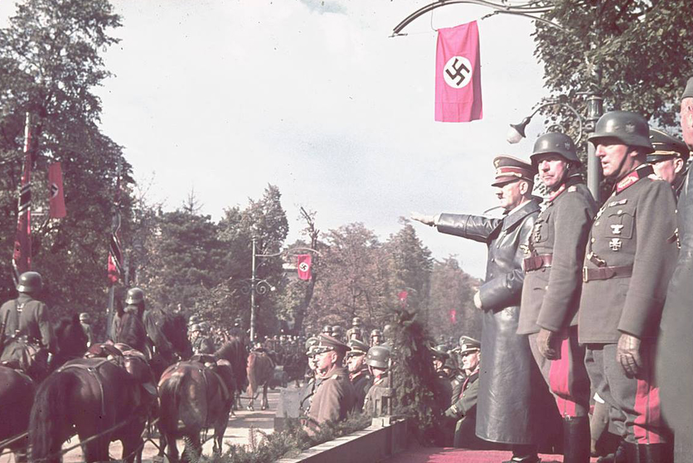Adolf Hitler salutes parading troops of the German Wehrmacht in Warsaw, Poland.
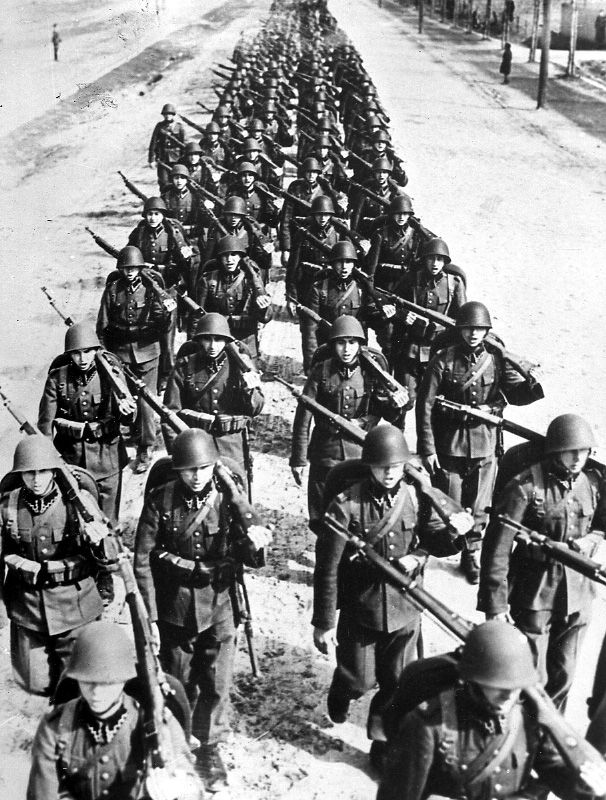Polish Infantry during the Invasion of Poland
On 17 September 1939, after signing a cease-fire with Japan, the Soviet Union invaded Eastern Poland under a pretext that the Polish state had ostensibly ceased to exist.
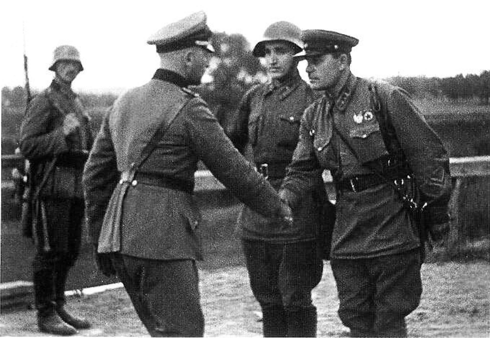German and Soviet officers shaking hands following the invasion of Poland.
OPERATION WESERÜBUNG
In April 1940, Germany invaded Denmark and Norway to protect shipments of iron ore from Sweden, which the Allies were attempting to cut off. Denmark capitulated after a few hours, and Norway was conquered within two months despite Allied support. British discontent over the Norwegian campaign led to the appointment of Winston Churchill as Prime Minister on 10 May 1940.
 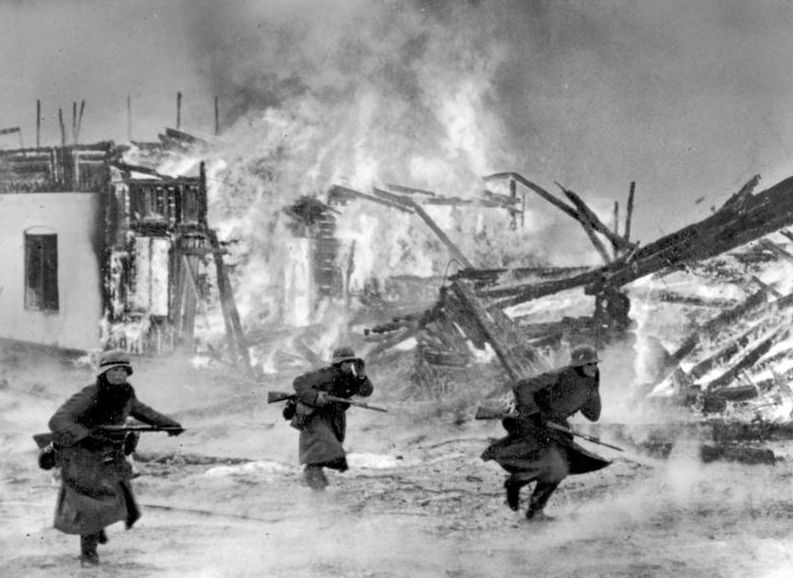
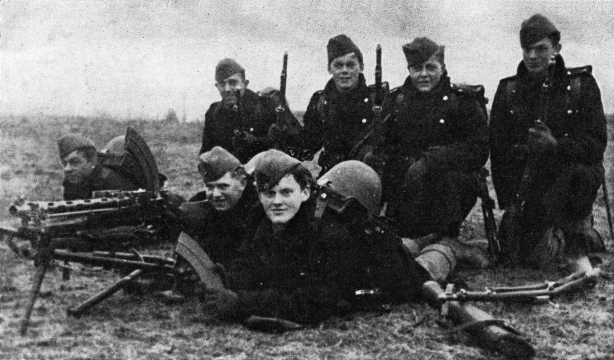
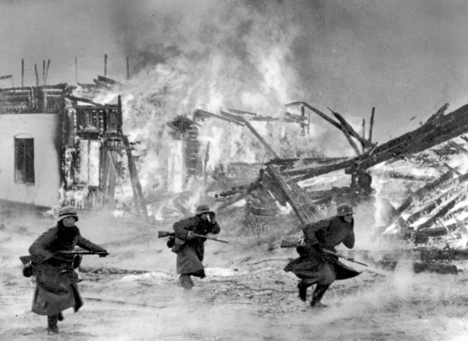
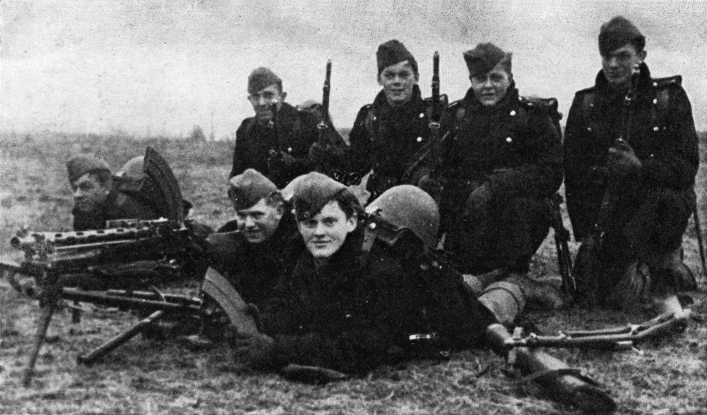
BATTLE OF FRANCE
On the same day, Germany launched an offensive against France. To circumvent the strong Maginot Line fortifications on the Franco-German border, Germany directed its attack at the neutral nations of Belgium, the Netherlands, and Luxembourg. The Germans carried out a flanking manoeuvre through the Ardennes region, which was mistakenly perceived by Allies as an impenetrable natural barrier against armoured vehicles. By successfully implementing new blitzkrieg tactics, the Wehrmacht rapidly advanced to the Channel and cut off the Allied forces in Belgium, trapping the bulk of the Allied armies in a cauldron on the Franco-Belgian border near Lille. The United Kingdom was able to evacuate a significant number of Allied troops from the continent by early June, although abandoning almost all their equipment.
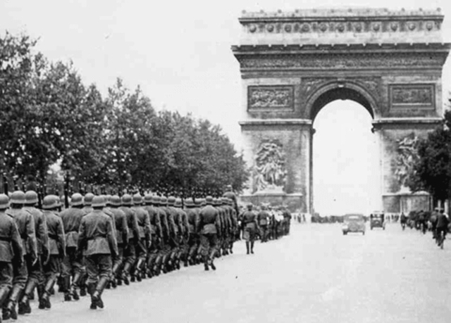 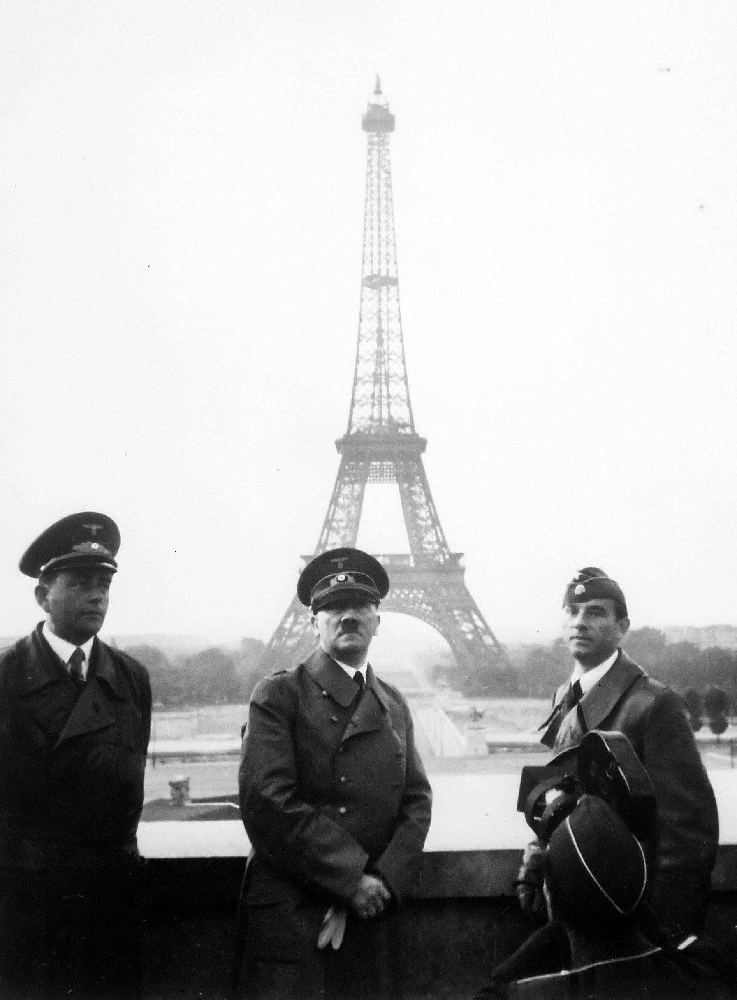 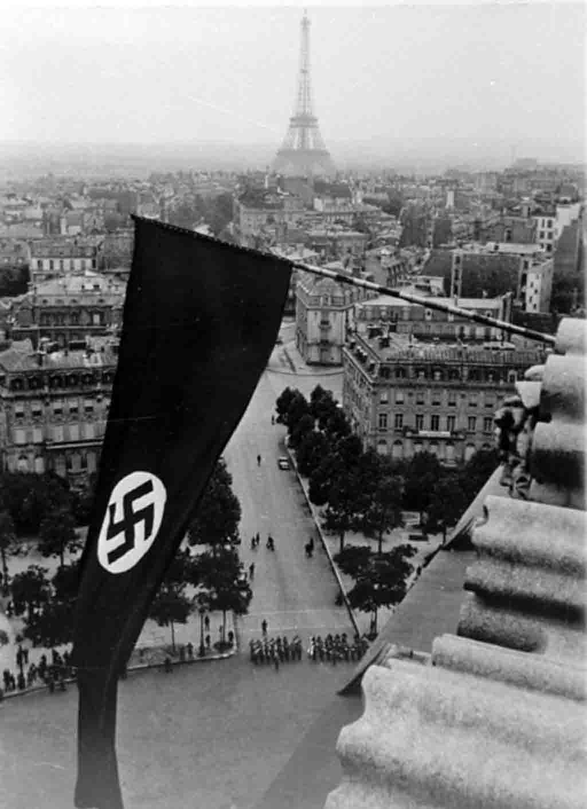 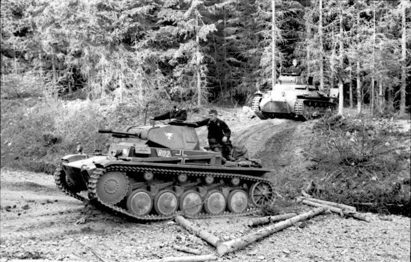 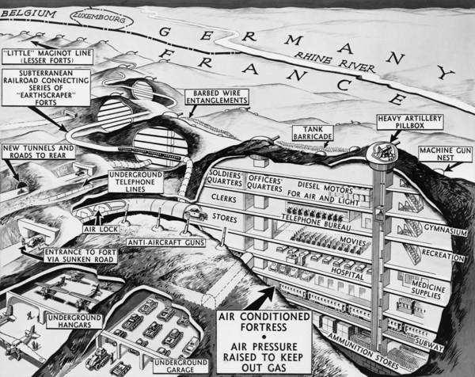DUNKIRK EVACUATION
On 10 June, Italy invaded France, declaring war on both France and the United Kingdom. The Germans turned south against the weakened French army, and Paris fell to them on 14 June. Eight days later France signed an armistice with Germany; it was divided into German and Italian occupation zones, and an unoccupied rump state under the Vichy Regime, which, though officially neutral, was generally aligned with Germany. France kept its fleet, which the United Kingdom attacked on 3 July in an attempt to prevent its seizure by Germany.
 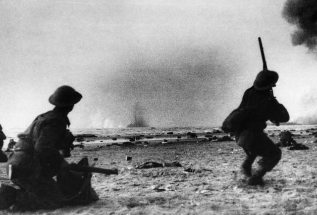
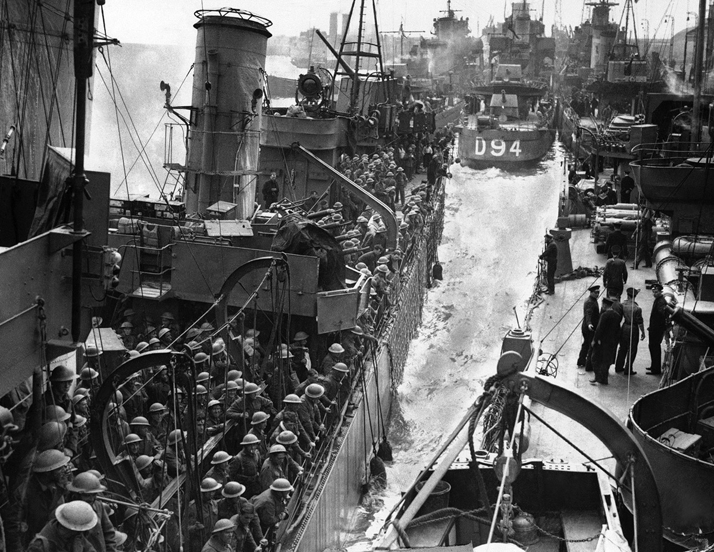
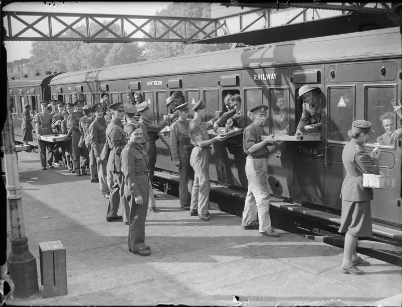
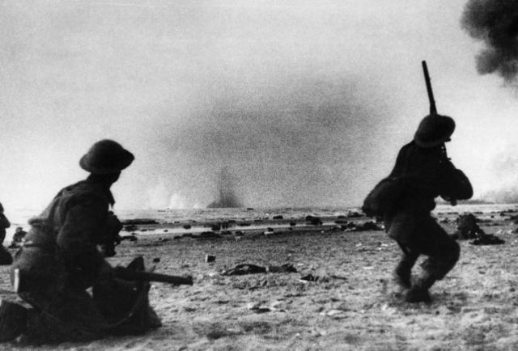
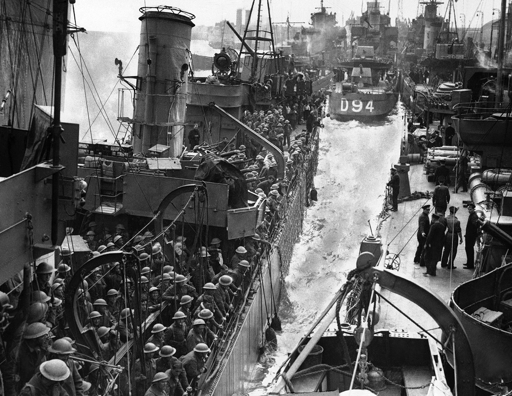
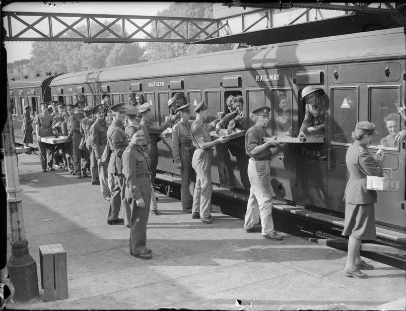
The air Battle of Britain began in early July with Luftwaffe attacks on shipping and harbours. The United Kingdom rejected Hitler's peace offer, and the German air superiority campaign started in August but failed to defeat RAF Fighter Command, forcing the indefinite postponement of the proposed German invasion of Britain. The German strategic bombing offensive intensified with night attacks on London and other cities in the Blitz, but failed to significantly disrupt the British war effort and largely ended in May 1941.
Using newly captured French ports, the German Navy enjoyed success against an over-extended Royal Navy, using U-boats against British shipping in the Atlantic. The British Home Fleet scored a significant victory on 27 May 1941 by sinking the German battleship Bismarck.
In November 1939, the United States was taking measures to assist China and the Western Allies and amended the Neutrality Act to allow "cash and carry" purchases by the Allies. In 1940, following the German capture of Paris, the size of the United States Navy was significantly increased. In September the United States further agreed to a trade of American destroyers for British bases. Still, a large majority of the American public continued to oppose any direct military intervention in the conflict well into 1941. In December 1940 Roosevelt accused Hitler of planning world conquest and ruled out any negotiations as useless, calling for the United States to become an "arsenal of democracy" and promoting Lend-Lease programmes of aid to support the British war effort. The United States started strategic planning to prepare for a full-scale offensive against Germany.
At the end of September 1940, the Tripartite Pact formally united Japan, Italy, and Germany as the Axis powers. The Tripartite Pact stipulated that any country, with the exception of the Soviet Union, which attacked any Axis Power would be forced to go to war against all three. The Axis expanded in November 1940 when Hungary, Slovakia and Romania joined. Romania and Hungary later made major contributions to the Axis war against the Soviet Union, in Romania's case partially to recapture territory ceded to the Soviet Union.
In early June 1940, the Italian Regia Aeronautica attacked and besieged Malta, a British possession. From late summer to early autumn, Italy conquered British Somaliland and made an incursion into British-held Egypt. In October, Italy attacked Greece, but the attack was repulsed with heavy Italian casualties; the campaign ended within months with minor territorial changes. Germany started preparation for an invasion of the Balkans to assist Italy, to prevent the British from gaining a foothold there, which would be a potential threat for Romanian oil fields, and to strike against the British dominance of the Mediterranean.
In December 1940, British Empire forces began counter-offensives against Italian forces in Egypt and Italian East Africa. The offensives were highly successful; by early February 1941, Italy had lost control of eastern Libya, and large numbers of Italian troops had been taken prisoner. The Italian Navy also suffered significant defeats, with the Royal Navy putting three Italian battleships out of commission by means of a carrier attack at Taranto, and neutralising several more warships at the Battle of Cape Matapan.
Italian defeats prompted Germany to deploy an expeditionary force to North Africa and at the end of March 1941, Rommel's Afrika Korps launched an offensive which drove back the Commonwealth forces. In under a month, Axis forces advanced to western Egypt and besieged the port of Tobruk.
By late March 1941, Bulgaria and Yugoslavia signed the Tripartite Pact; however, the Yugoslav government was overthrown two days later by pro-British nationalists. Germany responded with simultaneous invasions of both Yugoslavia and Greece, commencing on 6 April 1941; both nations were forced to surrender within the month. The airborne invasion of the Greek island of Crete at the end of May completed the German conquest of the Balkans. Although the Axis victory was swift, bitter and large-scale partisan warfare subsequently broke out against the Axis occupation of Yugoslavia, which continued until the end of the war.
In the Middle East in May, Commonwealth forces quashed an uprising in Iraq which had been supported by German aircraft from bases within Vichy-controlled Syria. Between June and July, they invaded and occupied the French possessions Syria and Lebanon, with the assistance of the Free French.
With the situation in Europe and Asia relatively stable, Germany, Japan, and the Soviet Union made preparations. With the Soviets wary of mounting tensions with Germany and the Japanese planning to take advantage of the European War by seizing resource-rich European possessions in Southeast Asia, the two powers signed the Soviet–Japanese Neutrality Pact in April 1941. By contrast, the Germans were steadily making preparations for an attack on the Soviet Union, massing forces on the Soviet border.
Hitler believed that the United Kingdom's refusal to end the war was based on the hope that the United States and the Soviet Union would enter the war against Germany sooner or later. He, therefore, decided to try to strengthen Germany's relations with the Soviets or failing that to attack and eliminate them as a factor. In November 1940, negotiations took place to determine if the Soviet Union would join the Tripartite Pact. The Soviets showed some interest but asked for concessions from Finland, Bulgaria, Turkey, and Japan that Germany considered unacceptable. On 18 December 1940, Hitler issued the directive to prepare for an invasion of the Soviet Union.
Operation Barbarossa
On 22 June 1941, Germany, supported by Italy and Romania, invaded the Soviet Union in Operation Barbarossa, with Germany accusing the Soviets of plotting against them. They were joined shortly by Finland and Hungary. The primary targets of this surprise offensive were the Baltic region, Moscow and Ukraine, with the ultimate goal of ending the 1941 campaign near the Arkhangelsk-Astrakhan line, from the Caspian to the White Seas. Hitler's objectives were to eliminate the Soviet Union as a military power, exterminate Communism, generate Lebensraum ("living space") by dispossessing the native population and guarantee access to the strategic resources needed to defeat Germany's remaining rivals.
Although the Red Army was preparing for strategic counter-offensives before the war, Barbarossa forced the Soviet supreme command to adopt a strategic defence. During the summer, the Axis made significant gains into Soviet territory, inflicting immense losses in both personnel and materiel. By mid-August, however, the German Army High Command decided to suspend the offensive of a considerably depleted Army Group Centre, and to divert the 2nd Panzer Group to reinforce troops advancing towards central Ukraine and Leningrad. The Kiev offensive was overwhelmingly successful, resulting in encirclement and elimination of four Soviet armies, and made possible further advance into Crimea and industrially developed Eastern Ukraine (the First Battle of Kharkov).
The diversion of three quarters of the Axis troops and the majority of their air forces from France and the central Mediterranean to the Eastern Front prompted the United Kingdom to reconsider its grand strategy. In July, the UK and the Soviet Union formed a military alliance against Germany and in August, the United Kingdom and the United States jointly issued the Atlantic Charter, which outlined British and American goals for the postwar world. In late August the British and Soviets invaded neutral Iran to secure the Persian Corridor, Iran's oil fields, and preempt any Axis advances through Iran toward the Baku oil fields or British India.
By October Axis operational objectives in Ukraine and the Baltic region were achieved, with only the sieges of Leningrad and Sevastopol continuing. A major offensive against Moscow was renewed; after two months of fierce battles in increasingly harsh weather, the German army almost reached the outer suburbs of Moscow, where the exhausted troops were forced to suspend their offensive. Large territorial gains were made by Axis forces, but their campaign had failed to achieve its main objectives: two key cities remained in Soviet hands, the Soviet capability to resist was not broken, and the Soviet Union retained a considerable part of its military potential. The blitzkrieg phase of the war in Europe had ended.
By early December, freshly mobilised reserves allowed the Soviets to achieve numerical parity with Axis troops. This, as well as intelligence data which established that a minimal number of Soviet troops in the East would be sufficient to deter any attack by the Japanese Kwantung Army, allowed the Soviets to begin a massive counter-offensive that started on 5 December all along the front and pushed German troops 100–250 kilometres (62–155 mi) west.
pacific war
Following the Japanese false flag Mukden Incident in 1931, the Japanese shelling of the American gunboat USS Panay in 1937, and the 1937-38 Nanjing Massacre, Japanese-American relations deteriorated. In 1939, the United States notified Japan that it would not be extending its trade treaty and American public opinion opposing Japanese expansionism led to a series of economic sanctions, the Export Control Acts, which banned U.S. exports of chemicals, minerals and military parts to Japan and increased economic pressure on the Japanese regime. During 1939 Japan launched its first attack against Changsha, a strategically important Chinese city, but was repulsed by late September. Despite several offensives by both sides, the war between China and Japan was stalemated by 1940. To increase pressure on China by blocking supply routes, and to better position Japanese forces in the event of a war with the Western powers, Japan invaded and occupied northern Indochina in September 1940.
Chinese nationalist forces launched a large-scale counter-offensive in early 1940. In August, Chinese communists launched an offensive in Central China; in retaliation, Japan instituted harsh measures in occupied areas to reduce human and material resources for the communists. The continued antipathy between Chinese communist and nationalist forces culminated in armed clashes in January 1941, effectively ending their co-operation. In March, the Japanese 11th army attacked the headquarters of the Chinese 19th army but was repulsed during Battle of Shanggao. In September, Japan attempted to take the city of Changsha again and clashed with Chinese nationalist forces.
German successes in Europe encouraged Japan to increase pressure on European governments in Southeast Asia. The Dutch government agreed to provide Japan with some oil supplies from the Dutch East Indies, but negotiations for additional access to their resources ended in failure in June 1941. In July 1941 Japan sent troops to southern Indochina, thus threatening British and Dutch possessions in the Far East. The United States, the United Kingdom, and other Western governments reacted to this move with a freeze on Japanese assets and a total oil embargo. At the same time, Japan was planning an invasion of the Soviet Far East, intending to capitalise off the German invasion in the west, but abandoned the operation after the sanctions.
Since early 1941 the United States and Japan had been engaged in negotiations in an attempt to improve their strained relations and end the war in China. During these negotiations, Japan advanced a number of proposals which were dismissed by the Americans as inadequate. At the same time the United States, the United Kingdom, and the Netherlands engaged in secret discussions for the joint defence of their territories, in the event of a Japanese attack against any of them. Roosevelt reinforced the Philippines (an American protectorate scheduled for independence in 1946) and warned Japan that the United States would react to Japanese attacks against any "neighboring countries".
Frustrated at the lack of progress and feeling the pinch of the American–British–Dutch sanctions, Japan prepared for war. On 20 November, a new government under Hideki Tojo presented an interim proposal as its final offer. It called for the end of American aid to China and for lifting the embargo on the supply of oil and other resources to Japan. In exchange, Japan promised not to launch any attacks in Southeast Asia and to withdraw its forces from southern Indochina. The American counter-proposal of 26 November required that Japan evacuate all of China without conditions and conclude non-aggression pacts with all Pacific powers. That meant Japan was essentially forced to choose between abandoning its ambitions in China, or seizing the natural resources it needed in the Dutch East Indies by force; the Japanese military did not consider the former an option, and many officers considered the oil embargo an unspoken declaration of war.
Japan planned to rapidly seize European colonies in Asia to create a large defensive perimeter stretching into the Central Pacific. The Japanese would then be free to exploit the resources of Southeast Asia while exhausting the over-stretched Allies by fighting a defensive war. To prevent American intervention while securing the perimeter, it was further planned to neutralise the United States Pacific Fleet and the American military presence in the Philippines from the outset. On 7 December 1941 (8 December in Asian time zones), Japan attacked British and American holdings with near-simultaneous offensives against Southeast Asia and the Central Pacific. These included an attack on the American fleets at Pearl Harbor and the Philippines, Guam, Wake Island, landings in Malaya, Thailand and the Battle of Hong Kong.
The Japanese invasion of Thailand led to Thailand's decision to ally itself with Japan and the other Japanese attacks led the United States, United Kingdom, China, Australia, and several other states to formally declare war on Japan, whereas the Soviet Union, being heavily involved in large-scale hostilities with European Axis countries, maintained its neutrality agreement with Japan. Germany, followed by the other Axis states, declared war on the United States in solidarity with Japan, citing as justification the American attacks on German war vessels that had been ordered by Roosevelt.
Axis advance stalls
On 1 January 1942, the Allied Big Four—the Soviet Union, China, the United Kingdom and the United States—and 22 smaller or exiled governments issued the Declaration by United Nations, thereby affirming the Atlantic Charter, and agreeing not to sign a separate peace with the Axis powers.
During 1942, Allied officials debated on the appropriate grand strategy to pursue. All agreed that defeating Germany was the primary objective. The Americans favoured a straightforward, large-scale attack on Germany through France. The Soviets were also demanding a second front. The British, on the other hand, argued that military operations should target peripheral areas to wear out German strength, leading to increasing demoralisation, and bolster resistance forces. Germany itself would be subject to a heavy bombing campaign. An offensive against Germany would then be launched primarily by Allied armour without using large-scale armies. Eventually, the British persuaded the Americans that a landing in France was infeasible in 1942 and they should instead focus on driving the Axis out of North Africa.
At the Casablanca Conference in early 1943, the Allies reiterated the statements issued in the 1942 Declaration and demanded the unconditional surrender of their enemies. The British and Americans agreed to continue to press the initiative in the Mediterranean by invading Sicily to fully secure the Mediterranean supply routes. Although the British argued for further operations in the Balkans to bring Turkey into the war, in May 1943, the Americans extracted a British commitment to limit Allied operations in the Mediterranean to an invasion of the Italian mainland and to invade France in 1944.
Pacific
By the end of April 1942, Japan and its ally Thailand had almost fully conquered Burma, Malaya, the Dutch East Indies, Singapore, and Rabaul, inflicting severe losses on Allied troops and taking a large number of prisoners. Despite stubborn resistance by Filipino and US forces, the Philippine Commonwealth was eventually captured in May 1942, forcing its government into exile. On 16 April, in Burma, 7,000 British soldiers were encircled by the Japanese 33rd Division during the Battle of Yenangyaung and rescued by the Chinese 38th Division. Japanese forces also achieved naval victories in the South China Sea, Java Sea and Indian Ocean, and bombed the Allied naval base at Darwin, Australia. In January 1942, the only Allied success against Japan was a Chinese victory at Changsha. These easy victories over the unprepared US and European opponents left Japan overconfident, as well as overextended.
In early May 1942, Japan initiated operations to capture Port Moresby by amphibious assault and thus sever communications and supply lines between the United States and Australia. The planned invasion was thwarted when an Allied task force, centred on two American fleet carriers, fought Japanese naval forces to a draw in the Battle of the Coral Sea. Japan's next plan, motivated by the earlier Doolittle Raid, was to seize Midway Atoll and lure American carriers into battle to be eliminated; as a diversion, Japan would also send forces to occupy the Aleutian Islands in Alaska. In mid-May, Japan started the Zhejiang-Jiangxi campaign in China, with the goal of inflicting retribution on the Chinese who aided the surviving American airmen in the Doolittle Raid by destroying air bases and fighting against the Chinese 23rd and 32nd Army Groups. In early June, Japan put its operations into action, but the Americans, having broken Japanese naval codes in late May, were fully aware of the plans and order of battle, and used this knowledge to achieve a decisive victory at Midway over the Imperial Japanese Navy.
With its capacity for aggressive action greatly diminished as a result of the Midway battle, Japan chose to focus on a belated attempt to capture Port Moresby by an overland campaign in the Territory of Papua. The Americans planned a counter-attack against Japanese positions in the southern Solomon Islands, primarily Guadalcanal, as a first step towards capturing Rabaul, the main Japanese base in Southeast Asia.
Both plans started in July, but by mid-September, the Battle for Guadalcanal took priority for the Japanese, and troops in New Guinea were ordered to withdraw from the Port Moresby area to the northern part of the island, where they faced Australian and United States troops in the Battle of Buna–Gona. Guadalcanal soon became a focal point for both sides with heavy commitments of troops and ships in the battle for Guadalcanal. By the start of 1943, the Japanese were defeated on the island and withdrew their troops. In Burma, Commonwealth forces mounted two operations. The first, an offensive into the Arakan region in late 1942, went disastrously, forcing a retreat back to India by May 1943. The second was the insertion of irregular forces behind Japanese front-lines in February which, by the end of April, had achieved mixed results.
Eastern Front
Despite considerable losses, in early 1942 Germany and its allies stopped a major Soviet offensive in central and southern Russia, keeping most territorial gains they had achieved during the previous year. In May the Germans defeated Soviet offensives in the Kerch Peninsula and at Kharkov, and then launched their main summer offensive against southern Russia in June 1942, to seize the oil fields of the Caucasus and occupy the Kuban steppe, while maintaining positions on the northern and central areas of the front. The Germans split Army Group South into two groups: Army Group A advanced to the lower Don River and struck south-east to the Caucasus, while Army Group B headed towards the Volga River. The Soviets decided to make their stand at Stalingrad on the Volga.
By mid-November, the Germans had nearly taken Stalingrad in bitter street fighting. The Soviets began their second winter counter-offensive, starting with an encirclement of German forces at Stalingrad, and an assault on the Rzhev salient near Moscow, though the latter failed disastrously. By early February 1943, the German Army had taken tremendous losses; German troops at Stalingrad had been defeated, and the front-line had been pushed back beyond its position before the summer offensive. In mid-February, after the Soviet push had tapered off, the Germans launched another attack on Kharkov, creating a salient in their front line around the Soviet city of Kursk.
Western Europe/Atlantic and Mediterranean
Exploiting poor American naval command decisions, the German navy ravaged Allied shipping off the American Atlantic coast. By November 1941, Commonwealth forces had launched a counter-offensive, Operation Crusader, in North Africa, and reclaimed all the gains the Germans and Italians had made. In North Africa, the Germans launched an offensive in January, pushing the British back to positions at the Gazala line by early February, followed by a temporary lull in combat which Germany used to prepare for their upcoming offensives. Concerns the Japanese might use bases in Vichy-held Madagascar caused the British to invade the island in early May 1942. An Axis offensive in Libya forced an Allied retreat deep inside Egypt until Axis forces were stopped at El Alamein. On the Continent, raids of Allied commandos on strategic targets, culminating in the disastrous Dieppe Raid, demonstrated the Western Allies' inability to launch an invasion of continental Europe without much better preparation, equipment, and operational security.
In August 1942, the Allies succeeded in repelling a second attack against El Alamein and, at a high cost, managed to deliver desperately needed supplies to the besieged Malta. A few months later, the Allies commenced an attack of their own in Egypt, dislodging the Axis forces and beginning a drive west across Libya. This attack was followed up shortly after by Anglo-American landings in French North Africa, which resulted in the region joining the Allies. Hitler responded to the French colony's defection by ordering the occupation of Vichy France; although Vichy forces did not resist this violation of the armistice, they managed to scuttle their fleet to prevent its capture by German forces. The Axis forces in Africa withdrew into Tunisia, which was conquered by the Allies in May 1943.
In June 1943 the British and Americans began a strategic bombing campaign against Germany with a goal to disrupt the war economy, reduce morale, and "de-house" the civilian population. The firebombing of Hamburg was among the first attacks in this campaign, inflicting significant casualties and considerable losses on infrastructure of this important industrial centre.
Allies gain momentum
After the Guadalcanal Campaign, the Allies initiated several operations against Japan in the Pacific. In May 1943, Canadian and US forces were sent to eliminate Japanese forces from the Aleutians. Soon after, the United States, with support from Australia, New Zealand and Pacific Islander forces, began major ground, sea and air operations to isolate Rabaul by capturing surrounding islands, and breach the Japanese Central Pacific perimeter at the Gilbert and Marshall Islands. By the end of March 1944, the Allies had completed both of these objectives and had also neutralised the major Japanese base at Truk in the Caroline Islands. In April, the Allies launched an operation to retake Western New Guinea.
In the Soviet Union, both the Germans and the Soviets spent the spring and early summer of 1943 preparing for large offensives in central Russia. On 4 July 1943, Germany attacked Soviet forces around the Kursk Bulge. Within a week, German forces had exhausted themselves against the Soviets' deeply echeloned and well-constructed defences, and for the first time in the war Hitler cancelled the operation before it had achieved tactical or operational success. This decision was partially affected by the Western Allies' invasion of Sicily launched on 9 July, which, combined with previous Italian failures, resulted in the ousting and arrest of Mussolini later that month.
On 12 July 1943, the Soviets launched their own counter-offensives, thereby dispelling any chance of German victory or even stalemate in the east. The Soviet victory at Kursk marked the end of German superiority, giving the Soviet Union the initiative on the Eastern Front. The Germans tried to stabilise their eastern front along the hastily fortified Panther–Wotan line, but the Soviets broke through it at Smolensk and by the Lower Dnieper Offensive.
On 3 September 1943, the Western Allies invaded the Italian mainland, following Italy's armistice with the Allies.Germany with the help of fascists responded by disarming Italian forces that were in many places without superior orders, seizing military control of Italian areas, and creating a series of defensive lines. German special forces then rescued Mussolini, who then soon established a new client state in German-occupied Italy named the Italian Social Republic, causing an Italian civil war. The Western Allies fought through several lines until reaching the main German defensive line in mid-November.
German operations in the Atlantic also suffered. By May 1943, as Allied counter-measures became increasingly effective, the resulting sizeable German submarine losses forced a temporary halt of the German Atlantic naval campaign. In November 1943, Franklin D. Roosevelt and Winston Churchill met with Chiang Kai-shek in Cairo and then with Joseph Stalin in Tehran. The former conference determined the post-war return of Japanese territory and the military planning for the Burma campaign, while the latter included agreement that the Western Allies would invade Europe in 1944 and that the Soviet Union would declare war on Japan within three months of Germany's defeat.
From November 1943, during the seven-week Battle of Changde, the Chinese forced Japan to fight a costly war of attrition, while awaiting Allied relief. In January 1944, the Allies launched a series of attacks in Italy against the line at Monte Cassino and tried to outflank it with landings at Anzio.
On 27 January 1944, Soviet troops launched a major offensive that expelled German forces from the Leningrad region, thereby ending the most lethal siege in history. The following Soviet offensive was halted on the pre-war Estonian border by the German Army Group North aided by Estonians hoping to re-establish national independence. This delay slowed subsequent Soviet operations in the Baltic Sea region. By late May 1944, the Soviets had liberated Crimea, largely expelled Axis forces from Ukraine, and made incursions into Romania, which were repulsed by the Axis troops. The Allied offensives in Italy had succeeded and, at the expense of allowing several German divisions to retreat, on 4 June Rome was captured.
The Allies had mixed success in mainland Asia. In March 1944, the Japanese launched the first of two invasions, an operation against British positions in Assam, India, and soon besieged Commonwealth positions at Imphal and Kohima. In May 1944, British forces mounted a counter-offensive that drove Japanese troops back to Burma by July, and Chinese forces that had invaded northern Burma in late 1943 besieged Japanese troops in Myitkyina. The second Japanese invasion of China aimed to destroy China's main fighting forces, secure railways between Japanese-held territory and capture Allied airfields. By June, the Japanese had conquered the province of Henan and begun a new attack on Changsha.
Allies close in (1944)
On 6 June 1944 (known as D-Day), after three years of Soviet pressure, the Western Allies invaded northern France. After reassigning several Allied divisions from Italy, they also attacked southern France. These landings were successful and led to the defeat of the German Army units in France. Paris was liberated on 25 August by the local resistance assisted by the Free French Forces, both led by General Charles de Gaulle, and the Western Allies continued to push back German forces in western Europe during the latter part of the year. An attempt to advance into northern Germany spearheaded by a major airborne operation in the Netherlands failed. After that, the Western Allies slowly pushed into Germany, but failed to cross the Rur river in a large offensive. In Italy, Allied advance also slowed due to the last major German defensive line.
On 22 June, the Soviets launched a strategic offensive in Belarus ("Operation Bagration") that destroyed the German Army Group Centre almost completely. Soon after that, another Soviet strategic offensive forced German troops from Western Ukraine and Eastern Poland. The Soviets formed the Polish Committee of National Liberation to control territory in Poland and combat the Polish Armia Krajowa; The Soviet Red Army remained in the Praga district on the other side of the Vistula and watched passively as the Germans quelled the Warsaw Uprising initiated by the Armia Krajowa. The national uprising in Slovakia was also quelled by the Germans. The Soviet Red Army's strategic offensive in eastern Romania cut off and destroyed the considerable German troops there and triggered a successful coup d'état in Romania and in Bulgaria, followed by those countries' shift to the Allied side.
In September 1944, Soviet troops advanced into Yugoslavia and forced the rapid withdrawal of German Army Groups E and F in Greece, Albania and Yugoslavia to rescue them from being cut off. By this point, the Communist-led Partisans under Marshal Josip Broz Tito, who had led an increasingly successful guerrilla campaign against the occupation since 1941, controlled much of the territory of Yugoslavia and engaged in delaying efforts against German forces further south. In northern Serbia, the Soviet Red Army, with limited support from Bulgarian forces, assisted the Partisans in a joint liberation of the capital city of Belgrade on 20 October. A few days later, the Soviets launched a massive assault against German-occupied Hungary that lasted until the fall of Budapest in February 1945. Unlike impressive Soviet victories in the Balkans, bitter Finnish resistance to the Soviet offensive in the Karelian Isthmus denied the Soviets occupation of Finland and led to a Soviet-Finnish armistice on relatively mild conditions, although Finland was forced to fight their former ally Germany.
By the start of July 1944, Commonwealth forces in Southeast Asia had repelled the Japanese sieges in Assam, pushing the Japanese back to the Chindwin River while the Chinese captured Myitkyina. In September 1944, Chinese forces captured Mount Song and reopened the Burma Road. In China, the Japanese had more successes, having finally captured Changsha in mid-June and the city of Hengyang by early August. Soon after, they invaded the province of Guangxi, winning major engagements against Chinese forces at Guilin and Liuzhou by the end of November and successfully linking up their forces in China and Indochina by mid-December.
In the Pacific, US forces continued to press back the Japanese perimeter. In mid-June 1944, they began their offensive against the Mariana and Palau islands and decisively defeated Japanese forces in the Battle of the Philippine Sea. These defeats led to the resignation of the Japanese Prime Minister, Hideki Tojo, and provided the United States with air bases to launch intensive heavy bomber attacks on the Japanese home islands. In late October, American forces invaded the Filipino island of Leyte; soon after, Allied naval forces scored another large victory in the Battle of Leyte Gulf, one of the largest naval battles in history.
Axis collapse, Allied victory (1944–45)
On 16 December 1944, Germany made a last attempt on the Western Front by using most of its remaining reserves to launch a massive counter-offensive in the Ardennes and along with the French-German border to split the Western Allies, encircle large portions of Western Allied troops and capture their primary supply port at Antwerp to prompt a political settlement. By January, the offensive had been repulsed with no strategic objectives fulfilled. In Italy, the Western Allies remained stalemated at the German defensive line. In mid-January 1945, the Soviets and Poles attacked in Poland, pushing from the Vistula to the Oder river in Germany, and overran East Prussia. On 4 February Soviet, British, and US leaders met for the Yalta Conference. They agreed on the occupation of post-war Germany, and on when the Soviet Union would join the war against Japan.
In February, the Soviets entered Silesia and Pomerania, while Western Allies entered western Germany and closed to the Rhine river. By March, the Western Allies crossed the Rhine north and south of the Ruhr, encircling the German Army Group B. In early March, in an attempt to protect its last oil reserves in Hungary and to retake Budapest, Germany launched its last major offensive against Soviet troops near Lake Balaton. In two weeks, the offensive had been repulsed, the Soviets advanced to Vienna, and captured the city. In early April, Soviet troops captured Königsberg, while the Western Allies finally pushed forward in Italy and swept across western Germany capturing Hamburg and Nuremberg. American and Soviet forces met at the Elbe river on 25 April, leaving several unoccupied pockets in southern Germany and around Berlin.
Soviet and Polish forces stormed and captured Berlin in late April. In Italy, German forces surrendered on 29 April. On 30 April, the Reichstag was captured, signalling the military defeat of Nazi Germany, Berlin garrison surrendered on 2 May.
Several changes in leadership occurred during this period. On 12 April, President Roosevelt died and was succeeded by Harry S. Truman. Benito Mussolini was killed by Italian partisans on 28 April. Two days later, Hitler committed suicide in besieged Berlin, and he was succeeded by Grand Admiral Karl Dönitz. Total and unconditional surrender in Europe was signed on 7 and 8 May, to be effective by the end of 8 May. German Army Group Centre resisted in Prague until 11 May.
In the Pacific theatre, American forces accompanied by the forces of the Philippine Commonwealth advanced in the Philippines, clearing Leyte by the end of April 1945. They landed on Luzon in January 1945 and recaptured Manila in March. Fighting continued on Luzon, Mindanao, and other islands of the Philippines until the end of the war. Meanwhile, the United States Army Air Forces launched a massive firebombing campaign of strategic cities in Japan in an effort to destroy Japanese war industry and civilian morale. A devastating bombing raid on Tokyo of 9–10 March was the deadliest conventional bombing raid in history.
In May 1945, Australian troops landed in Borneo, over-running the oilfields there. British, American, and Chinese forces defeated the Japanese in northern Burma in March, and the British pushed on to reach Rangoon by 3 May. Chinese forces started a counterattack in the Battle of West Hunan that occurred between 6 April and 7 June 1945. American naval and amphibious forces also moved towards Japan, taking Iwo Jima by March, and Okinawa by the end of June. At the same time, American submarines cut off Japanese imports, drastically reducing Japan's ability to supply its overseas forces.
On 11 July, Allied leaders met in Potsdam, Germany. They confirmed earlier agreements about Germany, and the American, British and Chinese governments reiterated the demand for unconditional surrender of Japan, specifically stating that "the alternative for Japan is prompt and utter destruction". During this conference, the United Kingdom held its general election, and Clement Attlee replaced Churchill as Prime Minister.
The call for unconditional surrender was rejected by the Japanese government, which believed it would be capable of negotiating for more favourable surrender terms. In early August, the United States dropped atomic bombs on the Japanese cities of Hiroshima and Nagasaki. Between the two bombings, the Soviets, pursuant to the Yalta agreement, invaded Japanese-held Manchuria and quickly defeated the Kwantung Army, which was the largest Japanese fighting force. These two events persuaded previously adamant Imperial Army leaders to accept surrender terms. The Red Army also captured the southern part of Sakhalin Island and the Kuril Islands. On 15 August 1945, Japan surrendered, with the surrender documents finally signed at Tokyo Bay on the deck of the American battleship USS Missouri on 2 September 1945, ending the war.